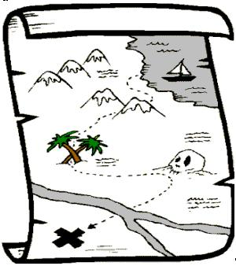
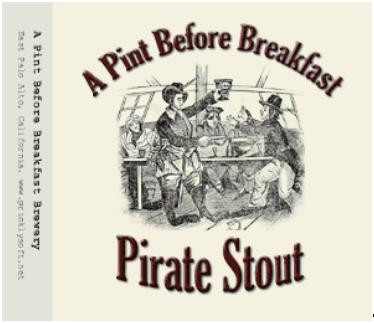
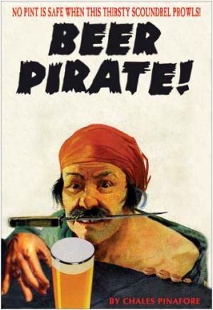
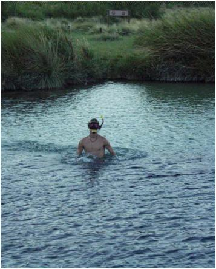
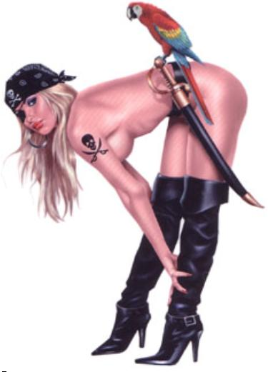

Hill and Haarrbor Hash
Run #1016, September 19, 2005
Hare: Amish It Head
Location: East Greenwich
Weather: Low 80’s, Humid
Present: Dr WHO, Great at Giving Head, Basket Boom Boom, Just Kari (Two-timer), Bondo Jovi, Oozing SD, SESYB, Tinker, Fuwangi Boner, Dry Foot Fairy, Seamus. Transplant/Visitor: Dick Dock (The B*tch gives head) Richmond H3.
The Run:
Ahoy, ye wanks! I be th’ secret scribe this week! Read along and see if ye can guess who I be. I was asked by Dr WHO to take over. It bein’ my favorite holiday, International Talk Like A Pirate Day, and all; and bein’ that I had to pick up someone at the Aaarrport, ‘twas mighty convenient-like. After all, our Commander-in-Chief be celebratin’ this day as well. Aaarr!
A born hasher. Aaarr!
At any rate, th’ scurvy lot o’ scalawags met at a paaarrkin’ lot overlooking Greenwich haarrbor. The virgin hare, Amish It Head, provided some pirate headgear for all, but nary a parrot nor eyepatch was seen. Avast there, matey, ye’d do well to improve upon this next year! A new visitor/transplant came aboard: Dick Dock (the B*tch gives head) ‘twas her moniker. Aye, an’ we’ll see if she shows up again! And Just Kari came back for seconds. She soon was wishin’ she’d strung hersell from her own yaaarrdaaarrm, ye can wager. Aaarr! Some instructions, and they were off, wi’ following winds and fair seas as they tacked nor’ by east on Crompton. Pavement! Aaarr!
Trail was found turning east to the shore thru a Water-Filtration Plant. Basket and Oozing had seen flour from th’ bluffs o’ the paaarrkin’ lot. But they had still followed the noise o’ Fuwangi as he turned down t’ th’ haarrbor. Trail turned back right under the parking lot. Aye, they’d been right hornswoggled! But the flour led sou’west to a “BN”! Begad! Hash o’ th’ year! Unfortunately the hare, a poxy lubber if ever there be one, called them back frantically. Aaarr! He should ha’ followed his own map!

The hare’s map o’ East Greenwich. Aaarr!
Tryin’ again, they climbed back out to Crompton, and turned sou’west. They crossed some RR tracks on Rocky Hollow, and at a check WHO and G@GH found true trail in some bushes along the train tracks. They turned up through a break in some hedges to a paaarrking lot. Sink me, but there were loads o’ lubbers getting’ out o’ their cars. These same shuddered in fear as the crew o’ motley privateers ran through, shoutin’: “No quarter!”, “Pieces o’ Eight!” and o’ course: “Aaarrr!” Most reckoned as they ran through that ‘twas some kind o’ tavern. But as they came to the front it was clear that th’ only eatin’ at this place was done by the worms o’ death. ‘Twas a right funeral paaarrlor! Shiver me timbers! Aaarr!
They sallied forth crost Main Street, and entered a quiet sort o’ neighborhood. Lovely yaaarrds, and all! Not that it was quiet for long, me Buckos! The checks and maaarrks were now in blood! (Or possibly pink chalk. No matter, ye could not see them in the wanin’ light to save yer life! Aaarr!) There were checks and more checks, pavement and more pavement; streets wi’ exotic names recallin’ the South Seas! Names like “Second Street” and “Fourth Ave” and th’ like. Jibbooms and Bobstays! Finally, the checks led out (One-eyed) Reilly Ave, to Cragan Field. Well, me beauties, they came on led by Fuwangi and WHO, surprising some landlubbers at th’ battin’ cages. Aaarr! WHO turned t’ port. Fuwangi turned t’ staaarrboard, and led G@GH, Just Kari and Dick Dock. Basket was already becalmed back in th’ numbered streets. Bondo was runnin’ with th’ wind abaft th’ beam, back to his car for some grog. Tinker and Oozing were tryin’ t’ short-cut, th’ lily-livered bilge-rats! Aaarr! True trail ‘twas nor’east, through East Greenwich Cemetery.
Dry Foot had aaarrived, back at th’ lot. In spite o’ th’ darkness, he managed to find his way into th’ closing ceremonies o’ th’ funeral. Aaarr! But he had no pirate garb. He made it to th’ numbered streets. Meanwhile, the rest o’ th’ benighted corsairs shifted crost the Cemetery, and back onto pavement. They continued across Rt 401. Fuwangi found a check. “Twas the last maaarrk any would see for a while, bedad! On straight he ran, close-hauled and smaaarrtly. WHO and SESYB turned t’ staaarrboard. They were on th’ true, and didn’t have a clue. But th’ hare, th’ bilge-sucking blaggaaarrd, followed halfway down th’ hill and turned the pack nor’east, leavin’ SESYB and WHO to their own mischief. Aaarr! Dry Foot caught up with Oozing. They were lost for sure, now, me hearties!
WHO and SESYB ran nor’east on Main, not hampered in th’ least by maaarrks or other confusions. They heard whistles ahead, and to port. Th’ pack was cruisin’ parallel, on th’ hill above. SESYB turned back up th’ hill on Pierce, followed by WHO. They found a check. They saw the pack. The hare was leadin’ back down th’ hill. All on blasted pavement! Aaarr! Finally, they met on Main, and continued nor’east to Queen. Turnin’ staaarrboard, they came down upon th’ Oak Tavern. And Fuwangi, th’ scurvy dog! He’d found th’ booty! Beer check! Aaarr!

Maaarrk ye these words! Aaarr!!
And ‘twas a fine Beer Check! No Basket, no Bondo! Two pitchers! Wenches! And one snaggle-toothed doxy who came over to compliment th’ crew on their appearance at th’ funeral. Seems she had been there and thought th’ pirates an entirely appropriate entertainment for th’ bereaved. Bein’ that the deceased (rest his soul!) had worn an eyepatch, and all! Aaarr! P’raps this be why the chanteys and songs were not forthcomin’ from the jack-taaarrs. Unusual attention ‘twas paid to th’ Red Sox game. Aaarr!
The trail from th’ BC , aye, ‘twas rare painful. The hare promised more flour, but delivered more hills! North on Main, then a west circle-jerk on Church. This was so’s to pass through some more yaaarrds and ballfields, as a pretense at shiggy. More pavement! Keelhaul the hare! Aaarr! There may’ve been flour now, but twas too daaarrk in th’ field to see. The hare led on. Rector street north to Division, east down to Main, north to Ladd, east to Duke, south to King to Exchange to Queen. Th’ pack was mighty confused. They passed th’ Oak Tavern again. Seein’ this, th’ baaarrrkeep became mighty confused. But the pack was not amused when it became clear that there’d be no stoppin’ a second time on the hare’s doubloons! Aaarr! Continuin’ sou’west on Duke to London St, where a pirate tunnel led ‘neath th’ railroad. They emerged on Crompton, and skippin’ over th’ Water Treatment circle jerk, they came to th’ cars. Awaitn’ were Basket, Bondo, Tinker, Oozing and Dry Foot. Bondo had finished his own brew. So Basket had broken into th’ hare’s car. They had nearly finished his beer. Aaarr!

Basket’s True Nature Revealed. Aaarr!
They all made for th’ shoreline o’ the haarrbor now, moon and tide both arisin’. The circle was formed at waters edge. Did I mention th’ tide? Aaarr! Ratin’ th’ Run: pavement, lack of shiggy, the presence of Bondo and Basket ‘twere powerful arguments against a goodly ratin’. But: new wenches, total confusion of marks, no Bondo or Basket at the Beer Check, funeral disruptions, and the tide, now up to th’ ankles o’ the rascals, could not be gainsaid. Total: +69! Aaarr! Hashit: ‘twas a foregone conclusion. Only Basket could miss th’ beer check and have th’ cheek to boast about it. The newcomer and two-timer were questioned, and ‘twas suggested that they walk th’ plank. But th’ plank was by now underwater. The ceremonies were cut short, and they swang low, water at the mid-pegleg.

Proper gaaarrb for th’ end o’ a Pirate Circle. Aaarr!
On On On ‘twas at (Deadeye) Dicks on Post Rd. near th’ aaarrport. ‘Twas a typical outing, with beer spillage, thievery, looting and pillaging. A buxom strumpet at th’ bar offered a shot o’ Captain Morgan, piteously begging that we stay th’ flood o’ song. She received her due: a right long Alouette, and a right pathetic Heigh Ho! Aaarr! So finishin’ up, off into th’ night they drove to their various hideaways and haunts. Leavin’ me, your poor scribe to tell the tale. Do ye not yet know who I be? Well, here be a picture to help ye reckon:

Aaarr! Aaarr!
Just Aaarriana